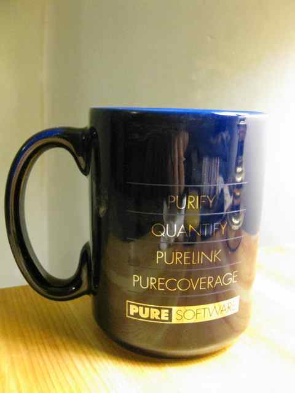

I’ve been reading a fascinating book, Adapt: Why Success Always Starts with Failure, by Tim Harford, an “economic journalist”. The book is surprisingly readable and impressive in the breadth of its case studies. His thesis is that in a complex world (which we in fact live in and is getting even more complex), succeeding at a project requires adaptation to changing circumstances and our failures.
Adapt book cover
Harford discusses with clarity issues such as how the Iraq war was carried out, the financial crisis of 2008, how to help people in developing nations, and a whole lot more.
In the end, of course, I was most interested in how to apply his insights to my own life. The last chapter of his book, “Adapting and you”, gave ideas:
Today was a beautiful, sunny, warm day, as promised earlier by the weather forecasts. Abby and I did the 11th annual Pittsburgh Step Trek for the first time. I wish I’d known about this event in earlier years! It was a truly unique event, an urban hike of the Pittsburgh South Side Slopes, with all its many staircases, zig-zagging streets, historic buildings, and great views of the city.
?
We did about six miles of fantastic sightseeing (and got a pretty good workout while at it):
It’s easy to get into a slump when trying to learn something or improve skill at something. I use a variety of tricks to stay excited and productive when that happens. I’ll use, as an example, a few details about my daily recorder practice, as it has unfolded this week so far. (In the future I’ll discuss how I apply similar tricks to other activities as well.)
The main key is flexibility. Here is how flexibility made this week pretty good for me, through combining each of these themes:
Oct 6, 2011 · 1 minute read · Comments programmingPittsburghRubyJRubyJavacompilerparser combinatorsParsletBitescriptdomain-specific languages
Tonight I attended the meeting of the Pittsburgh Ruby group at Vivisimo. It’s been a year now since I first discovered the Pittsburgh Ruby group and finally attended my first meeting as an initial non-Rubyist on November 4, 2010, at the encouragement of Bruce, who said it was a friendly group.
Presentation Chris Umbel gave a talk, “Building a compiler in JRuby”. Basically, he was inspired by Ian Dee’s work with a toy language Thnad at JRubyConf 2011 to illustrate writing a simple compiler, and decided to do similarly, inventing “sucklang”, a “language that sucks”.
Read On →
Lately I’ve been seeing a lot of mention of the online book “Learn C the Hard Way”, and how it quickly introduces and uses Valgrind. That brought back memories of the 1990s when I programmed in C, and then C++, and SIGSEGV and core were part of my daily life, as well as dbx and gdb.
My most important tool, however, was Purify of Pure Software. We were such good customers of Pure Software, using also Quantify, Pure Link, and Pure Coverage, that we got sent mugs, of which I still have one and drink water from daily!

Pure Software mug
In the spirit of reminiscence about C and C++ programming, I hereby share my first code excerpt of this blog.
My recorder practice (focused on alto and soprano) has continued to go very well since my last post on efficient practice.
However, a friend of mine has been wondering whether I am too competitive or driven in my quest for excellence in recorder playing, and asks whether I am having fun, so I thought I’d answer that question here.
First, some eye candy: today I finally got the new bass recorder that I ordered last week:
Yesterday there was a concert, much-anticipated, part of the current season of the Pittsburgh Renaissance & Baroque, that I didn’t attend. I felt slightly sad because I’m sure it was interesting, and also because fellow members of the local chapter of the American Recorder Society had been talking about going and urging me to come along.
Juilliard Baroque Ensemble
This was not the only concert in the past couple of years that I have chosen not to attend. So why have I chosen to skip these opportunities?